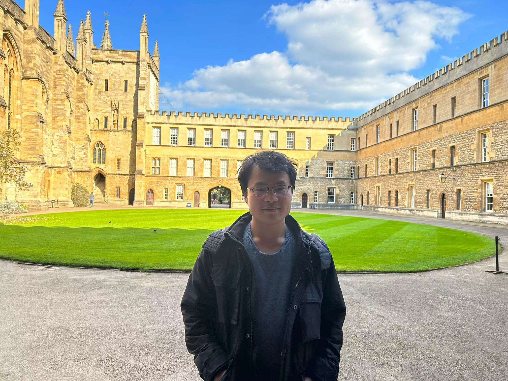

Associate Professor, Key Laboratory of Mathematics Mechanization, Chinese Academy of Sciences. (Prior to this, I was a research associate at the School of Mathematics, University of Bristol working with Ashley Montanaro and Noah Linden. I received my PhD at the University of Chinese Academy of Sciences.)
Research interests: quantum computation and symbolic computation
My research aims to better understand the power of quantum computers. I am especially interested in quantum algorithms, quantum query and communication complexity. I am also interested in symbolic computation, where I use tools from Clifford algebra, computational algebraic geometry, and invariant theory to automated reasoning. Some other interesting research topics include the Kaczmarz method, and randomised numerical linear algebra.
"If you can't do great things, do small things in a great way. Don't wait for great opportunities. Seize common, everyday ones and make them great." --- Napoleon Hill
Google Scholar, arXiv, Some talks, Full list of paper, the following is a list of preprints
Worst-case Harrow-Hassidim-Lloyd algorithm with average-case
correct quantum Fourier transform
with Noah Linden
to appear
Lower bounds analysis of quantum-inspired classical algorithms
and quantum query algorithms via communication complexity
with Nikhil S. Mande
to appear
Quantum and query complexities of functions of matrices
with Ashley Montanaro
QIP 2024
arXiv:2311.06999
Testing quantum satisfiability
with Ashley Montanaro, Dominic Verdon
QIP 2024
arXiv:2301.10699
Quantum speedup of leverage score sampling and its application
arXiv:2301.06107
Quantum algorithms for spectral sums
with Alessandro Luongo
arXiv:2011.06475